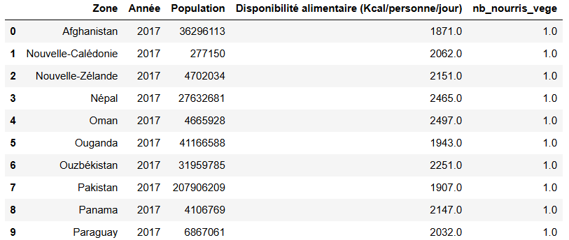
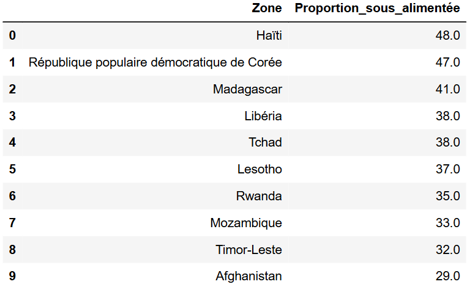

- 48 %de sous-nutrition en Haïti, pays le plus touché
- 2 500kcal/jour, seuil de référence FAO retenu
- 4jeux de données FAO croisés
01 Contexte & besoin métier
La planète produit-elle assez pour nourrir tout le monde ? Et si oui, pourquoi une partie de l'humanité reste-t-elle sous-alimentée ?
La réponse ne figure pas directement dans les données. La FAO recense des tonnages, des populations et des calories disponibles : pour estimer « combien de personnes pourraient être nourries », il faut construire de nouveaux indicateurs.
Trois questions structurent l'étude : quels pays sont les plus touchés, comment se répartit l'aide alimentaire, et la disponibilité mondiale suffirait-elle en théorie à couvrir les besoins.
02 Données
Quatre jeux de données de la FAO :
- Population par pays et par année.
- Sous-nutrition : nombre de personnes en situation de sous-alimentation.
- Disponibilité alimentaire : production, importations, exportations et disponibilité calorique par produit, pour l'année 2017.
- Aide alimentaire reçue par pays, de 2013 à 2016.
Aucune donnée à caractère personnel : elle est hors périmètre RGPD.
Qualité et limites
- Périodes non alignées : la disponibilité alimentaire n'existe que pour 2017, l'aide alimentaire s'arrête en 2016. Aucune analyse croisée dans le temps n'est possible.
- Unités hétérogènes : milliers de tonnes, kilocalories par personne et par jour, milliers d'habitants. Toute opération exigeait une conversion d'unités.
- Données déclaratives, transmises par les États. Les pays les plus touchés sont souvent ceux dont l'appareil statistique est le plus fragile.
- La sous-nutrition est estimée, non mesurée individuellement.
03 Démarche
-
Fixer le périmètre avant le nettoyage
Période 2013-2017, à l'échelle des pays, avec les indicateurs à calculer définis dès le départ.
Pourquoi ce choix
Sur des données ouvertes aussi vastes, l'exploration sans cadre produit des dizaines de croisements sans conclusion. Fixer les questions d'abord détermine quelles colonnes nettoyer et quelles tables croiser, et évite de nettoyer ce qui ne servira jamais.
-
Construire les indicateurs manquants
Trois indicateurs ont été calculés : la proportion de population en sous-nutrition par pays, le nombre théorique de personnes que la disponibilité alimentaire permettrait de nourrir, et le nombre de personnes nourrissables à partir des seuls produits végétaux.
Pourquoi un seuil de 2 500 kcal par jour
Convertir une disponibilité calorique en nombre de personnes nourries exige de fixer un besoin individuel de référence. La valeur de 2 500 kcal par jour a été retenue parce qu'elle est documentée par la FAO, et non choisie arbitrairement.
Ce seuil influence directement le résultat : plus il est bas, plus le nombre de personnes nourrissables augmente.

-
Classer et visualiser
Palmarès des pays les plus touchés par la sous-nutrition, des principaux bénéficiaires de l'aide alimentaire, comparatif des disponibilités entre les dix pays les mieux et les moins bien dotés, et évolution de l'aide alimentaire de 2013 à 2016 pour les cinq pays les plus aidés.
-
Descendre sur un cas d'étude
Un focus a été mené sur le manioc en Thaïlande, pays affichant 9 % de sa population en situation de sous-nutrition.
Pourquoi ce cas précis
La Thaïlande est un grand exportateur de manioc, et pourtant près d'un habitant sur onze y est en sous-nutrition.
Cet exemple montre que le manque de nourriture n'explique pas tout : une part de la production part à l'export ou sert à nourrir les animaux.
04 Résultats & impact

Constats
- La sous-nutrition est extrêmement concentrée. Dans les pays de tête, elle touche entre un tiers et près de la moitié de la population.
- Le classement des pays les plus touchés ne recoupe pas celui des pays les plus aidés. L'aide alimentaire dépend aussi de raisons géopolitiques et logistiques.
- La disponibilité mondiale n'est pas le facteur limitant. Le calcul des personnes théoriquement nourrissables le confirme : la nourriture existe, mais elle est mal répartie.
- Le cas thaïlandais démontre l'effet d'usage : produire en quantité ne garantit pas de nourrir sa population, si la production part à l'export ou vers l'alimentation animale.
Recommandations
- Cibler l'aide sur l'écart entre besoin et aide reçue, plutôt que sur le seul niveau de sous-nutrition.
- Analyser la destination des productions dans les pays exportateurs touchés : les solutions y sont surtout commerciales et politiques.
05 Limites & prochaines pistes
Les disparités sont établies, leurs causes ne le sont pas. L'étude mesure et classe les pays, sans expliquer les causes. Savoir qu'Haïti affiche 48 % de sous-nutrition ne dit rien de ce qui la produit ni de ce qui la réduirait.
La disponibilité alimentaire ne couvre qu'une seule année. Impossible de distinguer une situation structurelle d'un accident conjoncturel (mauvaise récolte, crise ponctuelle).
Les calculs de personnes nourrissables sont théoriques. Ils supposent une redistribution parfaite, sans perte, sans logistique et sans contrainte politique.
La moyenne nationale masque les inégalités internes. Un pays à disponibilité moyenne satisfaisante peut abriter des régions en situation critique.
Prochaines pistes
- Étendre la disponibilité alimentaire sur plusieurs années pour distinguer structurel et conjoncturel.
- Croiser avec des indicateurs économiques et politiques pour dépasser le constat et approcher les causes.
- Descendre à l'échelle infranationale là où les données existent.
- Étudier la répartition des usages (alimentation humaine, animale, industrielle) pour quantifier l'effet mis en évidence par le cas thaïlandais.